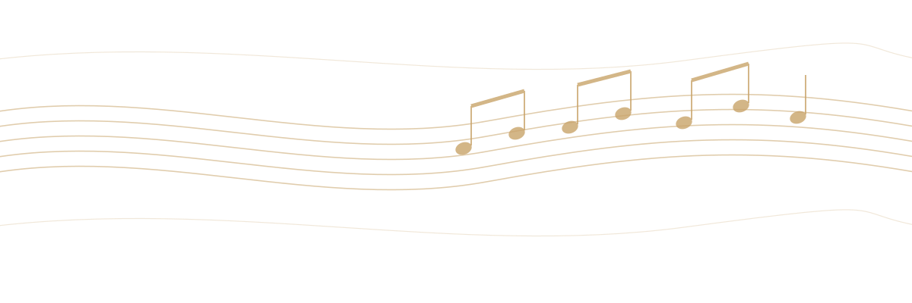

Composer · multi-instrumentalist · music producer
Gabriel
DaCruz
Compositions, a suite in movements and orchestral videos, published on Patreon, Spotify and YouTube. Lessons on request.
How he describes himself on Instagram; his public pages as recorded on 1 and 2 November 2026 by the SGit Newsroom.
Music
Compositions
Seven compositions he has published on Patreon, and a suite whose movements are on Spotify.
On Patreon
- Amor Para SempreSeptember 2025
- Suite Tudo AzulSeptember 2025
- Ademus SateSeptember 2025
- JourneyMarch 2026
- Magic NocteMarch 2026
- FleurMarch 2026
- AmazóniaMarch 2026
A suite in movements, on Spotify
- I.Intro
- II.Sol
- III.Mar
- IV.Sognando Anita
- I.Lua
Also on Apple Music and SoundCloud, under his name. The album's title and year are added once he confirms them.
Live and orchestra
On video
Three videos on his YouTube channel.
Who played, where and when: added for each video once Gabriel confirms it. His live and orchestral work beyond these videos is not shown until he has.
Lessons
Learn with Gabriel
On Instagram, Gabriel invites messages about lessons. That is the place to ask.
Biography
His story, in his words
A biography is being written with Gabriel, one conversation at a time. Nothing goes on this page until he has read it and said yes.
Listen and follow
Where to find him
Also on Spotify, Apple Music and SoundCloud, as Gabriel DaCruz.